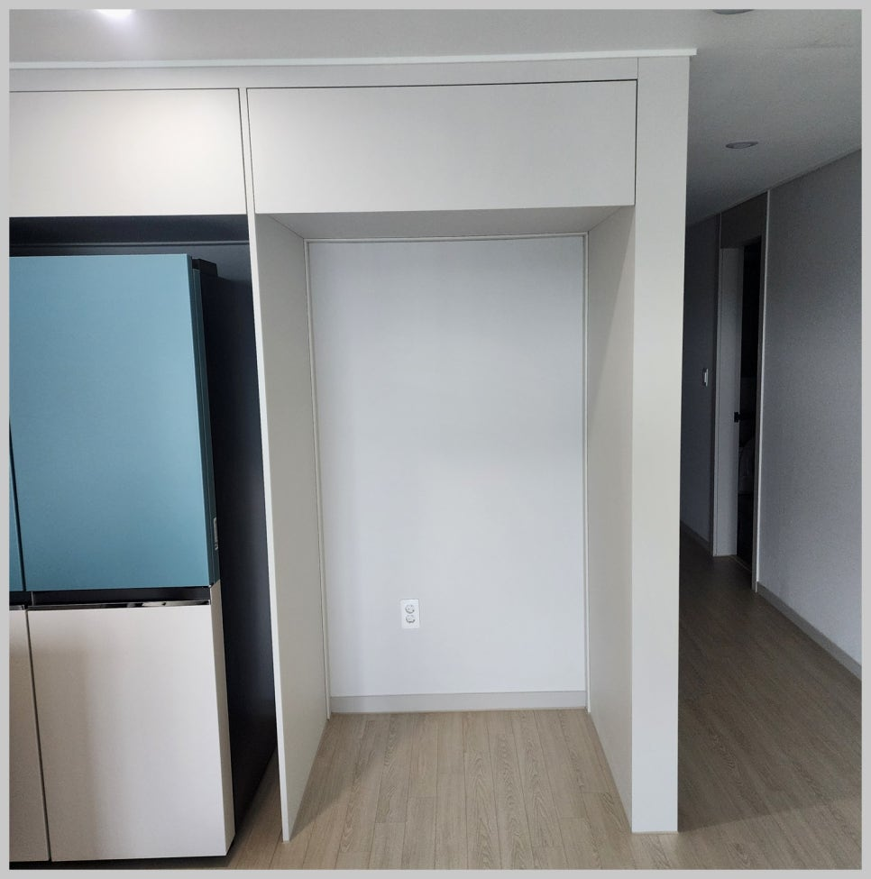
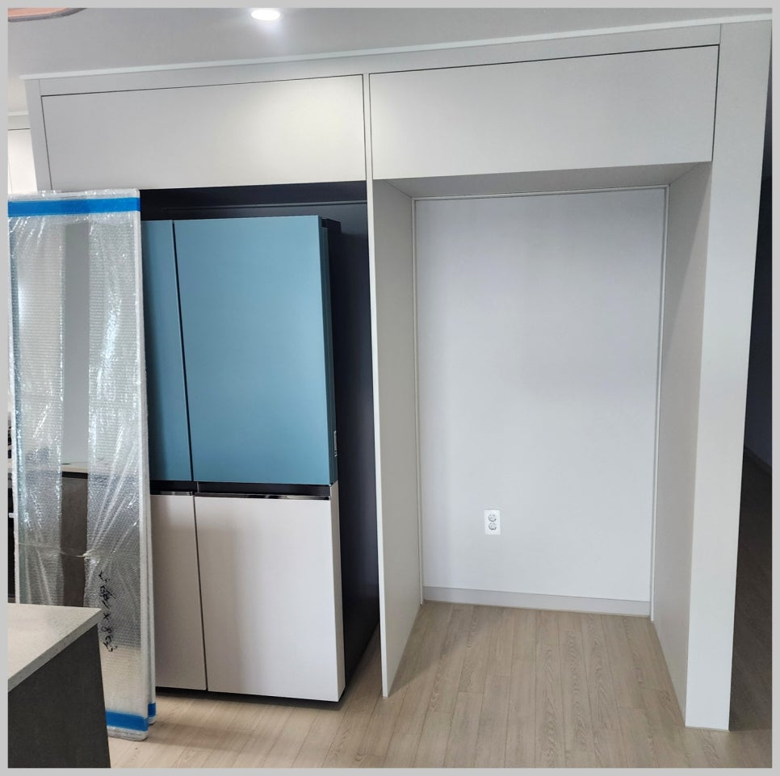
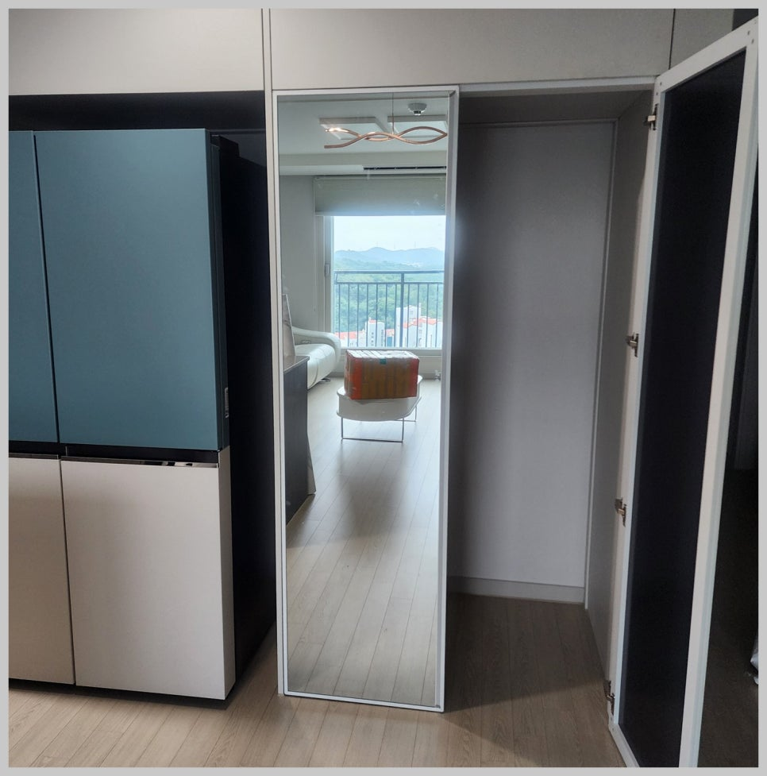

냉장고 옆 수납장을 가구로 새로 들이지 않고, 냉장고 하나가 빠진 붙박이 칸에 거울 문짝만 달아 만든 사례입니다. 서울 구로구의 한 아파트 주방 옆 자리였고, 손님은 물건을 넣어 둘 공간과 나가기 전 몸을 비춰 볼 거울을 함께 원하셨습니다. 칸의 뼈대는 손대지 않고, 안쪽 크기에 맞춘 문 두 짝을 달아 마무리했습니다.
한눈에 보기
| 작업 | 주문 제작 거울 문짝 2장을 여닫이로 달기 |
|---|---|
| 지역 | 서울 구로구 오류동 |
| 장소 | 아파트 주방 옆, 냉장고 한 대를 뺀 붙박이 칸 |
| 문짝 | 가는 흰색 테를 두른 거울, 한 짝 약 450×2000mm, 2장 |
| 고정 | 경첩(오른쪽 문은 안쪽에 4개), 옆판 안쪽 일부 보강 |
| 기록 | 오후 3시 20분쯤 빈 칸 사진, 5시 30분쯤 완성 사진 |



냉장고 옆 수납장으로 쓰려면 칸을 새로 짜야 하나요?
이 집은 그럴 필요가 없었습니다. 빈 칸 위로 장이 붙어 있고 좌우가 흰 판으로 막혀 있어서, 사실상 문만 없는 수납장 상태였습니다.
바닥 마루도 칸 안쪽까지 끊기지 않고 깔려 있어 문 아래에 턱을 따로 만들지 않았습니다. 안쪽 벽 가운데의 콘센트도 그대로 살아 있으니, 충전해 두는 물건을 보관하는 자리로 써도 됩니다.
뼈대가 튼튼하다면 손댈 곳은 앞면뿐이라, 냉장고 옆 수납장을 만드는 가장 간단한 방법이 문짝을 맞춰 다는 것입니다.
전신거울설치 대신 문짝에 거울을 넣을 때 무엇을 확인하나요?
닫으면 칸이 통째로 거울 면이 됩니다. 두 장의 흰 테가 가운데에서 만나고, 맞은편 거실과 창밖이 비쳐 주방 옆이 한 칸 더 깊어 보입니다. 바닥에서 위 장 바로 밑까지 오는 높이라 서서 몸 전체를 보기에 충분합니다.
대신 거울을 끼운 문은 같은 크기의 나무 문보다 무겁습니다. 경첩이 박히는 판이 받쳐 주지 못하면 시간이 갈수록 문이 아래로 처지기 때문에, 이 현장은 옆판 안쪽을 조금 보강한 뒤에 경첩 자리를 정했습니다.
왼쪽 문은 열리면서 냉장고 쪽으로 돌아갑니다. 그래서 냉장고와 옆판 사이 간격을 보고 두 문이 서로 부딪히지 않는지도 미리 따졌습니다.
거울 문은 어떤 순서로 달았나요?
- 칸 안쪽 폭과 높이를 기준으로 흰 테에 거울을 끼운 문짝 두 장을 공장에서 만들어 왔습니다. 현장에서 자르지 않기 때문에 몇 밀리만 크면 옆판에 걸리고, 작으면 닫았을 때 틈이 드러납니다.
- 비닐에 싼 문짝을 냉장고 옆에 세워 두고, 빈 칸과 주변을 한 바퀴 둘러보며 상태를 기록했습니다.
- 옆판을 가까이에서 살피고 안쪽 일부를 보강한 다음 경첩 위치를 잡았습니다.
- 두 장을 걸어 가운데가 고르게 맞닿도록 맞추고, 냉장고 문과 닿지 않는지 열어 보며 확인했습니다.
- 문을 열면 뒷면은 어두운 회색 판으로 마감돼 있고, 오른쪽 문 안쪽에는 경첩 네 개가 위아래로 나뉘어 들어가 있습니다. 칸은 비운 채로 넘겨 드렸고, 키 큰 청소 도구를 세우거나 나중에 선반을 넣어 나눠 쓸 수 있습니다.
붙박이장거울 문 비용은 무엇으로 정해지나요?
칸마다 크기가 다르고 그 칸에 맞춰 문을 새로 만드는 일이라 정해 둔 가격표는 없습니다. 이 현장의 금액도 따로 공개하지 않았습니다.
금액을 바꾸는 것은 크게 세 가지입니다. 문 크기와 장수(넓은 칸을 두 장으로 나누면 테와 경첩도 그만큼 늘어남), 경첩을 받을 옆판의 상태와 보강 여부, 그리고 문만 달지 선반이나 서랍까지 함께 넣을지입니다.
그래서 칸 사진과 안쪽 치수를 먼저 받아 본 뒤 비용을 알려 드립니다.
자주 묻는 질문
- Q. 칸 안쪽 벽에 콘센트가 있어도 문을 달 수 있나요?
- 네. 이 집도 안쪽 벽 가운데에 콘센트가 있었고, 문을 단 뒤에도 그대로 쓸 수 있습니다. 충전이 필요한 물건을 넣어 두는 자리로 활용해도 됩니다.
- Q. 높이 2m가 넘는 문짝인데 아파트로 옮길 수 있나요?
- 동네와 건물 종류를 알려 주시면, 아파트의 경우 그 길이의 문짝이 엘리베이터에 실리는지도 함께 확인해 드립니다.